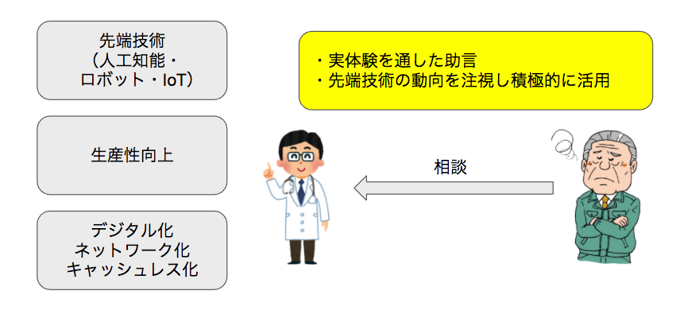
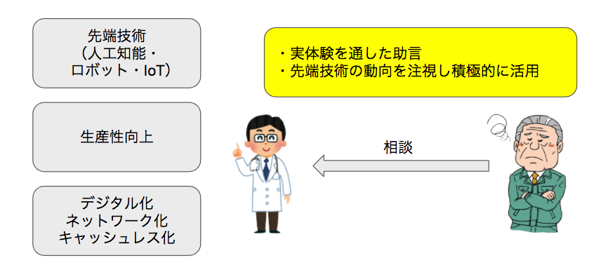

商品・サービス
ネット社会である現在、ビジネスはインターネットと無関係でいられなくなりました。これは会社の規模を問いません。商店から中小企業も同じ環境にいると考えられます。この傾向は今後も変わることなくビジネスのデジタル化・IT化は必須です。
また人工知能（AI）、IoT、ロボットなどの先端技術もビジネスに利用されて行きます。その進歩は非常に早く、すぐに陳腐化する可能性があります。
このような変化の激しい時代への対処法として、変化することを前提として物事に取り組むという方法があります。
新しい技術やサービスが利用可能になった場合、それを実際に商品やビジネスに取り入れて試してみて良し悪しを判断、採用不採用や改良を続け繰り返して行きます。この場合、リスク対策としてまずは小さくはじめて試してみるところがポイントです。

当社では比較的簡単に利用できる先端技術を積極的に導入し、商品・サービスに応用する手法についての助言をいたします。また試験的に実際に確認したいなどのニーズに対して「試作品作成サービス」も用意しています。
＞ 試作品作成サービス
人手不足・働き方改革・生産性向上などの言葉が毎日のように報道されています。その対策の中心となる考え方がIT化です。ビジネスにITを積極的に活用するため、特に中小企業を対象にしたサービスを用意しました。
＞ 中小企業IT化支援
その他のサービス
＞遠隔にある複数拠点の一括監視
＞営業所など同一地点の一括監視
＞セキュリティ強化：外出先など外部から会社への接続
Apple創業者 スティーブ・ジョブス
「Creativity is just connecting things」（創造性は単に物事の結合に過ぎない）
サブコンテンツ
絶賛発売中！

商品・サービス
ネット社会である現在、ビジネスはインターネットと無関係でいられなくなりました。これは会社の規模を問いません。商店から中小企業も同じ環境にいると考えられます。この傾向は今後も変わることなくビジネスのデジタル化・IT化は必須です。
また人工知能（AI）、IoT、ロボットなどの先端技術もビジネスに利用されて行きます。その進歩は非常に早く、すぐに陳腐化する可能性があります。
このような変化の激しい時代への対処法として、変化することを前提として物事に取り組むという方法があります。
新しい技術やサービスが利用可能になった場合、それを実際に商品やビジネスに取り入れて試してみて良し悪しを判断、採用不採用や改良を続け繰り返して行きます。この場合、リスク対策としてまずは小さくはじめて試してみるところがポイントです。

当社では比較的簡単に利用できる先端技術を積極的に導入し、商品・サービスに応用する手法についての助言をいたします。また試験的に実際に確認したいなどのニーズに対して「試作品作成サービス」も用意しています。 ＞ 試作品作成サービス
人手不足・働き方改革・生産性向上などの言葉が毎日のように報道されています。その対策の中心となる考え方がIT化です。ビジネスにITを積極的に活用するため、特に中小企業を対象にしたサービスを用意しました。 ＞ 中小企業IT化支援
その他のサービス ＞遠隔にある複数拠点の一括監視 ＞営業所など同一地点の一括監視 ＞セキュリティ強化：外出先など外部から会社への接続
Apple創業者 スティーブ・ジョブス 「Creativity is just connecting things」（創造性は単に物事の結合に過ぎない）
サブコンテンツ
絶賛発売中！